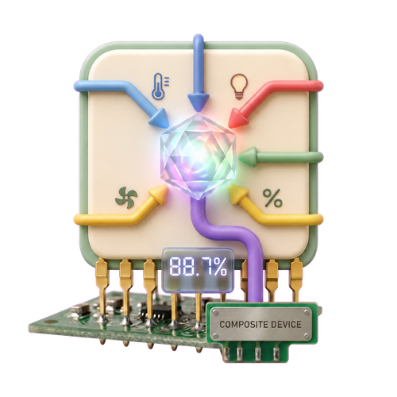

Composite Device
Turn the same capability from multiple devices into one live value.
Available in Homey test channel v1.10.22
What It Does
A Composite Device watches two or more Homey devices that share a capability, such as measure_humidity, measure_temperature, or alarm_contact. Whenever a source changes, the virtual device recalculates its output.
Native-looking output
Numeric values retain their source unit and decimals. Boolean results appear as an alarm. Text and clock results appear as text.
Realtime and resilient
Source listeners update the result immediately. A periodic refresh reconnects missing or restarted sources.
Setup
- Add Composite Device from Smart (Components) Toolkit.
- Select the capability to combine. Only capabilities found on at least two devices are shown, and units must match.
- Select a calculation. The available list changes for numbers, booleans, and text.
- Select at least two source devices, choose a name, and create the device.
Calculations
| Source | Operations | Output |
|---|---|---|
| Number | Average, minimum, maximum, sum, median | Numeric measure with source unit |
| Boolean / alarm | Any/maximum, all/minimum, majority, count on, percentage on | Alarm or numeric measure |
| Text / enum / clock | Most common, min/earliest, max/latest, most recently updated, average clock time | Text |
Flow Triggers
Composite value changed
Fires for every real change after the initial startup value. It supports numeric, boolean/alarm, text, enum, and clock outputs. Tags contain the current value, previous value, value type, and device name; the universal values are text tags so one card works for every output type.
Composite value changed by more than...
For numeric Composite Devices. Enter a non-negative threshold and choose fixed units or percent. The card fires only when the absolute difference from the preceding exposed value is strictly greater than that threshold.
Percentage change is calculated against the absolute previous value. A transition from zero to a non-zero value counts as 100%. Tags include current and previous value, signed change, absolute change, and percentage change.
Examples
HH:mm or HH:mm:ss and Average Clock Time. Clock arithmetic is circular: 23:00 and 01:00 average to 00:00.Missing Values and Source Error
Null, invalid, or unavailable sources do not prevent the remaining valid sources from contributing. The Source Error alarm turns on whenever fewer than all selected sources are contributing.
If no valid source remains, the Composite Device becomes unavailable. It automatically becomes available again when a valid source returns.